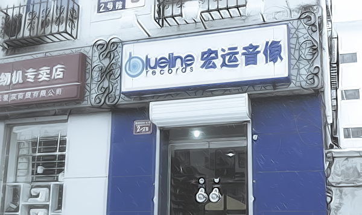
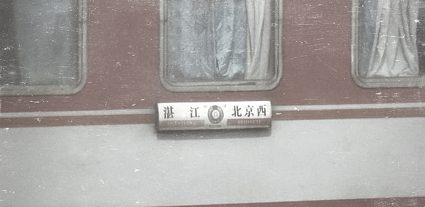
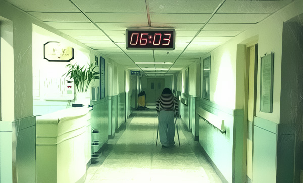
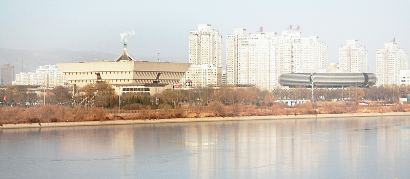

没想到这趟去广州只短短几天，就发现了一处梦想中的栖息地 —— 六运小区。 六运一街，二街，三街是天河体育中心西旁并行的几条小街道，这次去我们借宿的朋友家就在六运一街。六运小区是半开放式的小区，楼下是步行街，一楼都是小商铺，街口临近地铁入口的地方聚集着许多卖小吃的，再往里是服装店，手工杂货铺，美容院，甜品店，虽说是步行街，却一点也没有商业区的喧哗，安安静静，在20度的1月里逛着很惬意。小街上植物繁茂，再往里更幽静的地方，隐藏着一排排咖啡馆，穿过咖啡馆一条街，又来到一条稍微宽些的步行街，全是好吃的，晚上蹓跶到这里，总能遇见一些过来觅食的老外。大概因为楼上是居民楼的关系，步行街的小店，除了咖啡馆，都不会开太晚，差不多10点多就关门了。10点后只能来到这条离居民区稍远的大步行街宵夜了。 一开始，我们以为这样的小区会比较不安全，也会比较嘈杂，住了几天才发现，这里有巡逻的警察，居民们会聚在楼下的步行街角乘凉闲聊，连小区每家每户的信箱都设在步行街的转角，旁边坐者几位聊着天的大妈，邮递员大概都认识了，会先把几位大妈的信件择出来。邻居也很热情，跟我们介绍附近的菜市场，什么都有，想吃什么都有得卖。可惜我们连步行街上的小吃都没能吃遍就要离开。楼上楼下，很多户人家都会只关防盗门，看见上楼下楼脸生的，会拉开防盗门后的帘，多看几眼，我想这就是大城市早已失传的邻里守望了吧。白天我们睡到中午才自然醒，一点没有我们概念中步行街的嘈杂。 所谓市井生活，就应该是在这样的地方吧，有得逛，有得吃，旁边就是最拥挤的城市中心地铁换乘站，连着若干商城，一转弯却能同时感受到生活的闲适和惬意。我们去过的所有城市，只有这里，让我们有了不想离开的念头，可惜广州的落脚地已经定下来。先去珠江西岸隐居一年半载，再回到市井中来。 六运小区，我们会再回来的。
再见，新街口；再见，蓝线
 读大学的时候周末经常一个人的娱乐项目是，骑车从学院南路出发，经新街口一直往南，骑到西单图书大厦，再原路返回。这条路上的音像店，书店，乐器店对我来说实在是打发时间的好地方。那个年代的新街口唱片业一片繁荣，大大小小卖原盘、高仿、盗版的音像店生意都非常不错。那时候的蓝线唱片，每逢进货的日子，门口都是一堆乐迷等着。纸箱一放出来就开始疯抢，要想有所斩获，务必练好手翻唱片的技术，以及凭盒侧面辨认唱片的能力。每次周末走完这一趟旅程，拖着疲惫的身躯回到宿舍，把淘到的CD放入CD机里，便会感觉无比的温暖和满足。 到了毕业，离得远了，去新街口的次数越来越少，每次去都发现马路慢慢拓宽，百货大楼、商场也陆续建起来。但音像店则越来越少，淘碟的人也越来越少。直到去年，据闻新街口沿线最后一家音像店倒掉，可谓宣告一个时代的结束。稍有庆幸的是，作为见证了那个时代的蓝线唱片，把店挪到了北太平庄，坚守住唱片的最后阵地。自己现在淘碟已比以前理智很多，更多是网购，但每次要能经过三环边上的蓝线唱片都会进去看看，顾客很少，但总会有些人来店里取预定的正版唱片。这萧条的景象难免让人有点心酸，蓝线就像带着我们对新街口的回忆搬到三环边上。 在初到北京时，能见证新街口的繁荣；在即将离开北京时，发现中国每个城市在所谓的“发展”前，都不可避免的殊途同归，北京也不例外。那些岁月，那些记忆，很快也和新居民无关。
再见，K158/K157
 K158是从湛江到北京西的普快列车，可K157则是从北京西到湛江的回程。 这趟列车在我上大学的那年开通，当时历程是44个小时，后来提速一次到36个小时，时间虽然久，但也免去了我前辈们还要到别处转车去北京的痛苦。我从上大学到现在将近乘坐了30次左右，每一趟行程2764公里，算起来光坐这个列车已经带我走了8万多公里，足以环球旅行绕赤道两圈。当然这比他人真正的环球旅行逊色多了，但它是我的重要人生旅行。 36个小时的长途旅程，会比短途旅程发生更多故事。比如幸福的：当时年轻力壮的我的同学，曾一路不断给身边无座的大学女生让座，到终点站时便已经收集了十几个QQ号。比如尴尬的：有一同学一路跟对面的男人高谈阔论，结果最终巡警逮捕了那位小偷，幸好没把他当作同犯。比如悲惨的：春运期间车厢挤得满满的，我们曾20个小时不吃不喝不上厕所。 我第一次和我爸坐这趟车的时候，对面的阿姨就说：“这孩子太过安静了”。但长时间在狭小的空间，安静的人也会尝试相互聊天打发时间，于是我在这趟列车上也认识了不少朋友。01年身边座位的女生，独自一人从广西去东北见网上认识的男朋友，我问她不害怕被骗么。某年暑假一位北京的美女姐姐自己去海南，估计早就憧憬着南方炎炎夏日，穿着小背心小短裤，结果没想到空调车到了夜里冷得慌，她只能拿塑料水壶不断打热开水，然后在身上一遍遍地烫。还有那次5,6个校友晚上一起讲鬼故事，一个小师妹无意提到我离世的好友，让我一时恍如隔世。还有我在车上认识的我姐，某年春节给了我红包，一时间我觉得真的是亲姐。 K158从南向北经过好几个省，还有长江，黄河。要是到了冬天，这一路能让你明显感觉南北方景色的变化。很多城市，我经过了非常多次，但真正下来看看的没几个。所以当我们在郑州黄河风景区看着飞驰在黄河铁路上的列车时，就像看着自己逝去的青春。
纠结的闲置处理
有时觉得处理闲置这个说法有点无情，对于跟自己经历过某段生活的物品，可能是“接手收留”的说法更有人情味。如同你转手猫狗一样，没有人愿意转给一个虐猫者吧。如果能给到一位喜欢珍惜这样东西的人手里，价格有时就没什么所谓。像我的CD最终大部分还是处理给了朋友，很多算不上我喜爱的珍品，但每张也都记载着我当年淘碟的被人坑的故事。这期电台的音乐都来自这些转手出去的CD里，在把他们寄出去之前，我把他们每张又都听了一遍。 [embed]http://www.coletree.com/radio/coletree\_radio\_047.mp3\[/embed\]
一切都是过程
那些以为是结果，其实是每一站。每过一站，不断开始着每一段。我想不管一件事成功与否，最让当事人怀念和津津乐道的，始终还是最初那段追寻，奋斗的过程。如果丢失了过程，对成功的期盼无非是对物质的向往而显得无力；而当有了丰满的过程，事情最终是否成功就变得不再那么重要。过程是风景，结果是明信片。希望我们都能热爱和享受当下的生活，而不是忙忙碌碌，寄托于将来有钱了才重新审视自己的生活。 [embed]http://www.coletree.com/radio/coletree\_radio\_046.mp3\[/embed\]
2013，元旦
 这个元旦假期在医院度过。原本以为北京的医院都是人满为患，没想到这家还有空床位供我们病人家属晚上休息。 医院是个很封闭的空间，在这里你好像与世隔绝，没有电视，没有网络，看楼对面地铁站进进出出的人群，平时自己就是其中一个，这会看来也好像是两个世界的人。这几天过得很简单，白天在医院陪妈妈，下午回家做饭，吃完再给爸妈带饭过去，晚上跟爸轮流守夜，就睡在旁边那张床单上还有点血迹的空病床上。2013这个元旦，也好像变得跟我们无关。 那天在手术室门口等妈妈出来。这还是我第一次坐在手术室门口。无数次在电视剧里看到的场景，到了现实中不过是一扇简陋的推门，左右两边各写着手术室三个不怎么讲究的字，我在想大概那几个字也有几十年历史了吧。手术室专用电梯出来只有十几平米小小的等候区，没有来去匆匆的大夫，没有哭泣的亲属，有的只是安静。偶尔电梯开门和手术室开门的声音都显得特别响。一个下巴尖尖鼻子大大的老头推着一辆硕大的密封铁皮推车从电梯出来，里面足以装下5，6个人，推车上写着“手术室专用消毒用品车”，斜着头看了我们一眼，前后左右挪好推车的位置，进了手术室。要在电影里，这车里一定装着偷偷潜入手术室的什么人，而这个老头，一定是被私下收买的内应。 等候区仅有的五张椅子坐满了，除了我们一家还有一对三十多岁的夫妻。他们一直沉默不语，电梯门在他们左手边开开关关，每一次上行的电梯开门，他们都望向那边，像是等待着什么。后来终于上来一个医生，好像是另外一间大医院的，给那对夫妻带来了专门订做的手术器材，听医生一边把X光片举向窗边，一边跟他们说明手术方案，才知道要动手术的是那对夫妻的9岁小女儿，右腿手术，要用什么烧掉外层的组织，在小腿骨骼处上钢板，然后用40多个钢钉固定。介绍方案的过程中，那对夫妻一直默默的点头，末了医生说这套订做的器材全部算下来9500，让他们现在把钱给他，夫妻俩 轻轻应了一声，又默默拿出早已准备好的一大摞钱。医生接过钱说“那就这样，你们别着急，我这就去给大夫了”，然后推门进了手术室，夫妻俩愣了一下，对望一眼，跟着医生进了手术室，门还在来回晃着，就在门后，夫妻俩拉住医生，医生说“哎哟，不用给我了，你们都已经给了器材费了”，丈夫把一叠钱塞到医生手上，背着推开手术室的门，一边往外退着，一边说“您就收下吧，不然我们心里不安”。夫妻俩默默坐回我们旁边的座位上，然后再也没说一句话。 对那些还在庆祝末日后新年的人来说，2013元旦很快就会成为和往年一样普通的一个新年，但对这9岁小女孩的一家而言，这个元旦他们大概一生都不会忘记。
最好的煤是无烟煤
 忽冷忽热，困，又睡不着。反正明天还有一天就开始放假了，起来补一篇太原的游记。 大学时最好的朋友是太原附近榆次人，所以在大学时期已经来过一次。印象中的太原脏脏的，空气里飘着煤灰。 这次去太原停留得稍微多些，仍然无意于去那些名胜古迹，只是在城里随便逛逛。汾河岸边看太原，还是挺有都市的感觉。到的时候是周一，传统的博物馆休息日，太原博物馆关着门，只好去不远处的煤炭博物馆溜达一下。进门的时候，博物馆的灯都是关着的，工作人员懒洋洋的开灯迎接我们这仅有的两名游客，还有位讲解员有点不耐烦的陪同着，我们也只好装作感兴趣的听她一路讲解。 直到看到＂煤变油＂这个词，我才突然意识到自己原来跟煤炭这行还曾经有点关系。当年在ABB的时候，我记得有个项目就是煤变油。于是脑海里立刻浮现若干石化行业英文术语，让人犯困的技术交流会，难缠的中石化客户，还有那些个老同事：表面正经实际坏坏的Steven，有好多内幕消息的Rita，是男人都羡慕的潇洒老Tom，每次来中国都会吃坏肚子的Brian…所有这些人都好多年没联络了，然后就这么突然的想起。 有些人有些事，你以为淡忘了，其实一直都在那儿，总有一天会因为一些完全想不到的原因而再次浮现。比如，煤炭，貌似不是个可以文艺起来的介质。